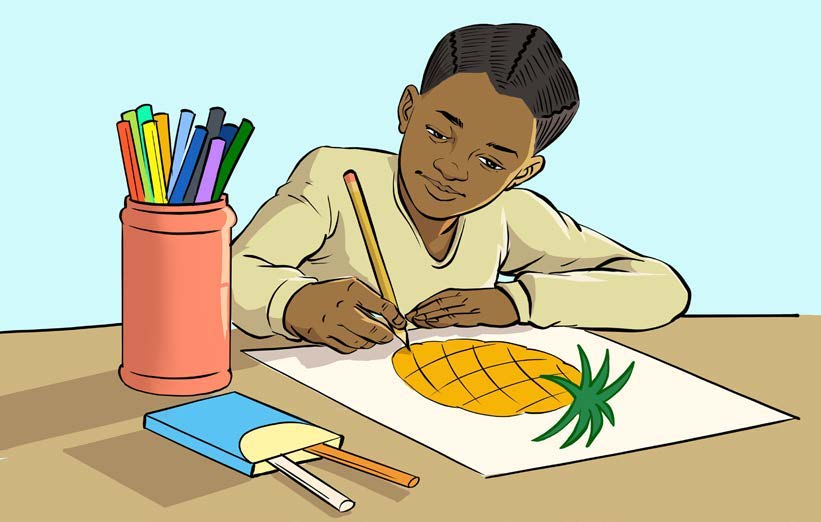

Kuandika habari fupi kutokana na picha kwa
kuzingatia alama za uandishi
Kuandika habari fupi kutokana na picha kwa
kuzingatia alama za uandishiZoezi la sita
Tazama picha ifuatayo, kisha nakili habari kutokana na
picha hiyo. Zingatia alama za uandishi zilizotumika.
Lisa mchoraji
Zoezi la sitaTazama picha ifuatayo, kisha nakili habari kutokana na
picha hiyo. Zingatia alama za uandishi zilizotumika.Lisa mchoraji

Lisa anachora nanasi mezani akiwa na penseli za rangi.
Lisa ni msichana wa miaka saba. Anasoma darasa la
pili. Anaishi na mama yake katika Mkoa wa Kigoma.
Lisa anapenda kuchora. Hupenda kuchora wanyama,
matunda na vyombo vya usafiri. Kila siku akitoka shuleni,
huchora picha moja. Baada ya kuchora, hupaka rangi.
Baadaye, huwaonesha wazazi wake na marafiki zake.
Walimu pia wanajua kwamba Lisa anapenda kuchora.
Wote hufurahia kuziona picha zake. Hakika, picha za Lisa
zinapendeza.
Lisa ni msichana wa miaka saba. Anasoma darasa la
pili. Anaishi na mama yake katika Mkoa wa Kigoma.
Lisa anapenda kuchora. Hupenda kuchora wanyama,
matunda na vyombo vya usafiri. Kila siku akitoka shuleni,
huchora picha moja. Baada ya kuchora, hupaka rangi.
Baadaye, huwaonesha wazazi wake na marafiki zake.
Walimu pia wanajua kwamba Lisa anapenda kuchora.
Wote hufurahia kuziona picha zake. Hakika, picha za Lisa
zinapendeza.
Nakili habari ya Lisa mchoraji kwa kuzingatia alama za uandishi; tumia eneo la kuandikia, kibodi au Breli.